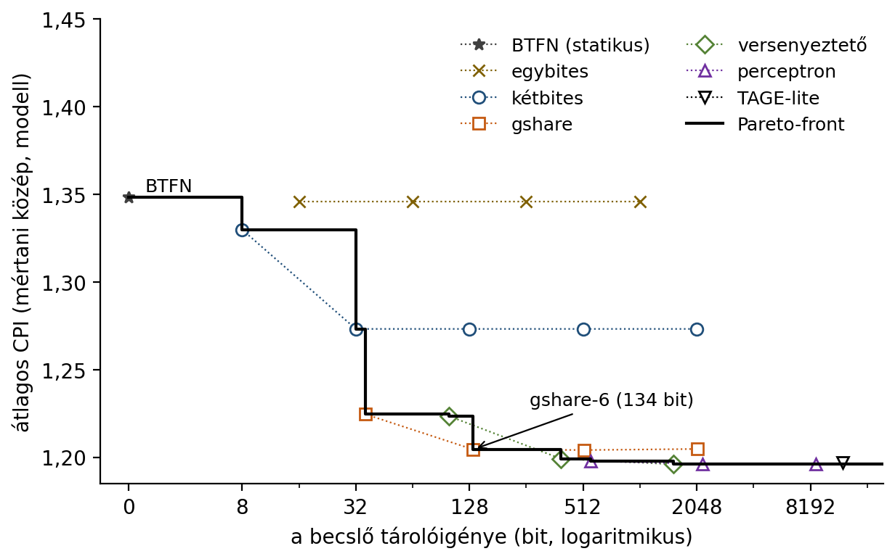

A korábbi fejezetekben külön-külön építettünk egy RISC-V-értelmezőt, egy futószalag-szimulátort és több elágazásbecslőt. Most egyetlen processzormodellé kapcsoljuk össze őket, és olyan kérdést teszünk fel, amelyet egy tervező is feltenne: ha a front-endre néhány száz vagy néhány ezer bit tárhelyet költhetünk, melyik becslőt válasszuk, és mennyit ér ez a továbbítási utakhoz vagy az elágazás korábbi eldöntéséhez képest? A válaszhoz nem elég a modell: tudnunk kell, hogy helyes-e. A projekt ezért három részből áll: specifikáció, validálás, tervezési térkép.
A modell egy cső, amelyben az adat balról jobbra halad:
| Lépés | Modul | Bemenet → kimenet |
|---|---|---|
| fordítás | archkit.riscv.assemble |
RV32I(+M) assembly → gépi kód és adat |
| végrehajtás | archkit.riscv.Machine |
program → utasításnyom (trace), regiszterek, kimenet |
| front-end | archkit.bpred |
elágazások → irány- és célbecslés |
| memória | archkit.cache |
betöltések, tárolások → késleltetés |
| időzítés | archkit.pipeline |
nyom + becslések → ciklusok, megakadások |
| értékelés | archkit.projects |
konfiguráció → számlálók, költség, Pareto-front |
A kulcs a nyomvezérelt (trace-driven) felépítés: az értelmező eldönti, mi történik (melyik utasítás, milyen címmel, ugrott-e), a futószalag-modell pedig csak azt, mikor. Emiatt a becslő hibái soha nem változtatják meg a program eredményét, csak a ciklusszámot – pontosan úgy, ahogy a valódi processzor architekturális viselkedése sem függ a spekulációtól.
A nyomvezérlés ára, hogy a tévesen lekért utasítások nem hajtódnak végre, tehát nem töltenek adatot a cache-be és nem módosítják a becslőt. Valódi gépen ez a „mellékhatás” létezik – éppen erre épül a Spectre és Meltdown támadási elve –, a mi modellünk viszont a teljesítményt vizsgálja, és ott az elhanyagolás elfogadható, ha kimondjuk. A döntés tipikus mérnöki kompromisszum: egyszerűbb, gyorsabb, könnyebben ellenőrizhető modell, szűkebb érvényességi körrel.

Az ábra fő üzenete a telítődés: a görbék néhány száz bit fölött alig javulnak. A térképet a tervezési tér szakaszában állítjuk elő.
Bemenet. RV32I(+M) assembly-forrás (ELF-fájlt a
modell nem olvas; a fordítói kimenet kézzel vagy a Kódolás bitszinten és egy RISC-V-értelmező
eszközeivel alakítható át), valamint egy CpuConfig:
| Mező | Jelentés | Alapérték |
|---|---|---|
forwarding, branch_stage |
továbbítás; elágazás döntése EX-ben vagy ID-ben | igaz; EX |
predictor, log2_entries |
irányjósló fajtája és táblamérete | bimodal, 8 |
btb_entries, ras_depth |
célpuffer és visszatérésicím-verem (0: nincs) | 0, 0 |
mul_latency, div_latency |
többciklusú műveletek | 3, 16 |
caches, memory_extra |
cache-szintek (méret, sor, utak, többletciklus), memóriakésés | 1 KiB + 8 KiB, 60 |
Kimenet. Report: utasításszám, ciklus,
CPI-bontás okonként, elágazás- és cache-számlálók, a front-end
tárolóigénye bitben, valamint a program kimenete és végső
regiszterei.
A konfiguráció maga is ellenőrzött: ismeretlen becslőnév, negatív
méret vagy a memóriánál lassabb L2 ValueError-t ad. Ez nem
kényelmi funkció: egy pásztázás több száz futásában egy elgépelt
paraméter csendben értelmetlen pontot adna.
A front-end összekötése. A futószalag-modell két
„horgot” ismer: az irányjóslót (predict,
update) és a célellenőrzést (target_hit). A
projekt _FrontEnd osztálya a kettőt köti össze: a BTB a
ténylegesen ugró elágazások célját tanulja, a feltétlen ugrásoknál a
BTB, ret esetén a RAS adja a célt (Célcím-becslés: BTB, RAS, közvetett ugrások és a
front-end). Saját becslőt úgy köthetsz be, hogy ugyanezt a három
metódust (predict, update,
storage_bits) megvalósítod, és felveszed a
make_predictor függvénybe.
Költségmodell. A tárolóigény a becslő számlálóinak, címkéinek és előzményregiszterének bitjei, plusz a BTB (bejegyzésenként címke, 30 bites cél, érvényességbit) és a RAS (30 bites címek). A terület, az energia és az időzítés ennél bonyolultabb: egy nagy tábla lassabban olvasható, és akár a ciklusidőt is megnövelheti (A futószalag elve: átbocsátás és késleltetés). A bitszám tehát alsó költségbecslés.
Egyszerűsítések (ezeket mindig írjuk a jelentésbe): egyutas, sorrendi futószalag; BTB nélkül a becsült elágazás célja ismertnek számít; az utasításcache ideális; a becslő frissítése azonnali; a tárolás is a MEM-ben vár a cache-re (nincs tárolópuffer).
Egy szimulátor, amely mindig ad valamilyen számot, a legveszélyesebb hibaforrás. Négy védelmi vonalat építünk.
check_invariants):
ciklusszám
megakadás; minden nyombeli utasításnak pontosan egy sora van,
programsorrendben; a WB-ciklusok szigorúan nőnek; a nyom folytonos.code/tests/test_projects.py): a kézi eredmények, a
monotonitás (jobb becslő nem téveszthet többet egy szabályos mintán,
forwarding nélkül nem lehet gyorsabb) és a hibás konfigurációk
elutasítása. A tesztek minden módosítás után futnak.Az invariánsok ereje, hogy nem függenek a konkrét programtól. Ha például valaki a modellben úgy ad hozzá egy új megakadási okot, hogy a ciklust növeli, de az okot nem könyveli el, az első invariáns minden programon azonnal elbukik. A kézi diagram ezzel szemben az értelmet ellenőrzi: hogy a megakadás a megfelelő utasításnál és a megfelelő számban jelenik-e meg.
Definíció. A tervezési tér (design space) a megengedett konfigurációk halmaza; egy konfiguráció dominál egy másikat, ha egyik mérőszámban sem rosszabb, és legalább egyben jobb. A Pareto-front a nem dominált konfigurációk halmaza.
Két mérőszámunk van: a költség (a becslő bitjei) és a teljesítmény (a munkaterhelések CPI-inek mértani közepe, kisebb a jobb). A mértani közép a CPI-arányok összevetéséhez megfelelő átlag (Benchmarkolás: mérni tanulni).
Továbbvitt eredmény. Az integrált modell: értelmező → nyom → futószalag becslővel és cache-sel → számlálók; a validálási módszer: aranymodell, ciklusinvariáns ( megakadás), kézi pipeline-diagramok és regressziós tesztek, majd csak ezután paraméterpásztázás, Pareto-fronttal és a feltételek kimondásával. Erre épül a 2–3. záróprojekt: cache-szimulátor és mikrobenchmark-sorozat validálása és a Vegyes vizsgafeladatsor.
Ha egy saját értelmezőt vagy egyciklusú adatutat írsz a projekthez, a hibát a nyomok összevetése találja meg a leggyorsabban (Vezérlőegység és vezérlőjelek): a referencia és a vizsgált modell nyomát utasításonként hasonlítjuk össze, és az első eltérésnél állunk meg – a későbbiek mind annak következményei. Az összevetett mezők: a PC, a művelet, a célregiszter, az eredmény, memóriaműveletnél a cím. A következő példa szándékosan elrontja a referencia egyetlen értékét:
import sys; sys.path.insert(0, "code")
from dataclasses import replace
from archkit import projects, riscv
def first_diff(ref, dut, keys=("pc", "op", "rd", "value", "addr")):
for i, (a, b) in enumerate(zip(ref, dut)):
bad = [k for k in keys if getattr(a, k) != getattr(b, k)]
if bad:
return i, a.text, {k: (getattr(a, k), getattr(b, k)) for k in bad}
return None if len(ref) == len(dut) else (min(len(ref), len(dut)), "hossz", {})
good = riscv.run(riscv.sum_src([3, 1, 4, 1])).trace
faulty = list(good)
k = [i for i, x in enumerate(good) if x.op == "add"][2]
faulty[k] = replace(faulty[k], value=faulty[k].value + 1)
print(first_diff(good, faulty))(16, 'add t0, t0, t1', {'value': (8, 9)})A kimenet megmutatja a hibás utasítás sorszámát, szövegét és a várt, illetve kapott értéket. A módszer a 2–3. záróprojekt: cache-szimulátor és mikrobenchmark-sorozat cache-modelljénél is működik: ott a hozzáférésenkénti találat/hiba sorozatot hasonlítjuk egy kézi referenciához.
Tekintsük a következő programot, 256 bejegyzéses kétbites becslővel (kezdőállapot 1: „gyengén nem ugrik”), cache nélkül:
main:
li t0, 3
li t1, 0
loop:
add t1, t1, t0
addi t0, t0, -1
bnez t0, loop
mv a0, t1li, háromszor a
háromutasításos mag, a végén mv:
.add és az
addi eredményét a következő utasítás EX-ben továbbítással
kapja meg, nincs megakadás.Ha a programból kihagynánk az utolsó mv-t, a második
tévesztés nem látszana a ciklusszámban, mert utána nincs utasítás,
amelyet késleltethetne – a kézi ellenőrzésnek ezt a határesetet is
érdemes tudnia.
SMALL = """
main:
li t0, 3
li t1, 0
loop:
add t1, t1, t0
addi t0, t0, -1
bnez t0, loop
mv a0, t1
"""
ideal = projects.CpuConfig(caches=())
m = riscv.run(SMALL)
rep = projects.run_trace(m.trace, ideal, program=m.program, wrong_path=True)
print(rep.result.table())
print(f"N = {rep.n}, ciklus = {rep.cycles}, CPI = {rep.cpi:.3f}, a0 = {m.reg('a0')}")
projects.check_invariants(m.trace, rep.result)
data = riscv.branchy_data(256, seed=3)
out = projects.run_program(riscv.branchy_src(data), projects.CpuConfig(predictor="gshare"))
print("aranymodell:", out.output.strip(), "==", sum(x for x in data if x >= 128))utasítás 1 2 3 4 5 6 7 8 9 10 11 12 13 14 15 16 17 18 19
li t0, 3 IF ID EX MEM WB
li t1, 0 IF ID EX MEM WB
add t1, t1, t0 IF ID EX MEM WB
addi t0, t0, -1 IF ID EX MEM WB
bnez t0, loop IF ID EX MEM WB
mv a0, t1 × IF ID – – –
(hibás ág) × IF – – – –
add t1, t1, t0 IF ID EX MEM WB
addi t0, t0, -1 IF ID EX MEM WB
bnez t0, loop IF ID EX MEM WB
add t1, t1, t0 IF ID EX MEM WB
addi t0, t0, -1 IF ID EX MEM WB
bnez t0, loop IF ID EX MEM WB
add t1, t1, t0 × IF ID – – –
addi t0, t0, -1 × IF – – – –
mv a0, t1 IF ID EX MEM
utasítás 20
mv a0, t1 WB
N = 12, ciklus = 20, CPI = 1.667, a0 = 6
aranymodell: 25139 == 25139A × jelű sorok a tévesen lekért, törölt utasítások; a
diagram pontosan a kézi számítás 20 ciklusát mutatja.
A futtatást végző függvény magja a modulban:
# részlet – code/archkit/projects.py
res = pipeline.simulate(
tr, forwarding=cfg.forwarding, branch_stage=cfg.branch_stage, predictor=front,
target_hit=front.target_hit, mul_latency=cfg.mul_latency, div_latency=cfg.div_latency,
mem_delay=mem_delay if hier else None, program=program, wrong_path=wrong_path)A check_invariants a futás után mindig lefut a
run_program-ban; a pásztázásban a sebesség miatt
kihagyható, de a validált modellt utána nem módosítjuk. A
front objektum köti össze az irányjóslót a BTB-vel és a
RAS-sal, a mem_delay pedig a cache-hierarchiából számolja a
MEM szakasz többletciklusait.
Mielőtt paramétereket pásztázunk, nézzük meg, mire megy el az idő az alapkonfigurációban (a cache-ekkel együtt). A bontás megmondja, melyik tervezési döntésnek lehet egyáltalán nagy hatása.
machines = projects.run_workloads(projects.kernel_set())
for name in ("sum", "matmul-ikj", "chase", "branchy-vél"):
r = projects.run_trace(machines[name].trace)
parts = r.result.cpi_stack().items()
stack = ", ".join(f"{k} {v:.2f}" for k, v in parts if v >= 0.005)
print(f"{name:12}CPI {r.cpi:6.3f}: {stack}")sum CPI 1.950: alap 1.00, load-use 0.20, memória 0.75
matmul-ikj CPI 1.550: alap 1.00, load-use 0.10, elágazás 0.01, szerkezeti 0.39, memória 0.05
chase CPI 20.933: alap 1.00, memória 19.93
branchy-vél CPI 2.042: alap 1.00, load-use 0.18, elágazás 0.18, memória 0.68A chase szinte teljes ideje memória: itt a legjobb
becslő sem segítene. A matmul legnagyobb vesztesége
szerkezeti: a 3 ciklusos szorzás addig foglalja az EX szakaszt. Az
elágazásveszteség csak a véletlen branchy sorában
számottevő, és ott sem uralkodó. Ez a „gyorsítsd a gyakori esetet” elv
(Amdahl és Gustafson törvénye) tervezői
alkalmazása: előbb a legnagyobb tételt vizsgáljuk.
Öt kis munkaterhelést választunk, hogy a becslők különböző képességei
érvényesüljenek: rendezett és véletlen branchy,
matmul, egymásba ágyazott rövid ciklus és egy
háromperiódusú elágazásminta. A memóriát idealizáljuk
(caches=()), hogy csak a front-end hatása látsszon.
NESTED = """
main:
li s0, 150 # külső ciklus
li s2, 0
outer:
li s1, 4 # rövid belső ciklus
inner:
add s2, s2, s1
addi s1, s1, -1
bnez s1, inner
addi s0, s0, -1
bnez s0, outer
mv a0, s2
li a7, 1
ecall
"""
PERIOD = """
main:
li s0, 600
li s1, 0 # s1 = lépésszám mod 3
li s2, 0
loop:
bnez s1, skip # minden 3. körben nem ugrik
addi s2, s2, 5
skip:
addi s1, s1, 1
li t0, 3
blt s1, t0, keep
li s1, 0
keep:
addi s0, s0, -1
bnez s0, loop
mv a0, s2
li a7, 1
ecall
"""
work = {"rendezett": riscv.branchy_src(riscv.branchy_data(512, ordered=True)),
"véletlen": riscv.branchy_src(riscv.branchy_data(512)),
"matmul": riscv.matmul_src(8, order="ikj"),
"egymásba": NESTED, "periodikus": PERIOD}
machines = projects.run_workloads(work)
sizes = {"none": (8,), "btfn": (8,), "bimodal": (2, 4, 8), "gshare": (4, 6, 10),
"tournament": (6, 8), "perceptron": (2, 6), "tage": (8,)}
configs = [replace(ideal, name=p if p in ("none", "btfn") else f"{p}-{k}",
predictor=p, log2_entries=k) for p, ks in sizes.items() for k in ks]
points = projects.design_space(machines, configs)
front = {p.config.name for p in projects.pareto_front(points)}
print("konfiguráció bit CPI " + "".join(f"{w[:7]:>9}" for w in work))
for p in sorted(points, key=lambda p: p.cost_bits):
mark = "*" if p.config.name in front else " "
row = "".join(f"{v:9.3f}" for _, v in p.per_workload)
head = f"{p.config.name:14}{mark}{p.cost_bits:6}{p.cpi:8.4f}"
print(head + row)konfiguráció bit CPI rendeze véletle matmul egymásb periodi
none 0 1.6520 1.725 1.725 1.587 1.533 1.699
btfn * 0 1.3482 1.365 1.365 1.504 1.136 1.401
bimodal-2 * 8 1.3298 1.367 1.367 1.504 1.137 1.302
bimodal-4 * 32 1.2732 1.187 1.369 1.504 1.137 1.203
gshare-4 * 36 1.2245 1.191 1.377 1.506 1.010 1.105
gshare-6 * 134 1.2045 1.192 1.386 1.507 1.011 1.007
tournament-6 * 390 1.1992 1.187 1.369 1.504 1.008 1.006
bimodal-8 512 1.2732 1.187 1.369 1.504 1.137 1.203
perceptron-2 * 560 1.1978 1.188 1.371 1.495 1.007 1.005
tournament-8 * 1544 1.1960 1.187 1.359 1.494 1.008 1.007
gshare-10 2058 1.2047 1.196 1.388 1.496 1.013 1.008
perceptron-6 8720 1.1963 1.187 1.364 1.495 1.007 1.005
tage-8 12096 1.1971 1.187 1.369 1.494 1.007 1.005A csillag a (most kisebb) halmaz Pareto-pontjait jelöli. Olvassuk oszloponként:
Figyeld meg azt is, hogy a mértani közép elrejti a részleteket: a gshare átlagos előnye a kétbites számlálóval szemben körülbelül 5%, de egyes terheléseken 10% fölött van, máshol semmi. A jelentésben ezért a terhelésenkénti oszlopokat is közölni kell, nem csak az átlagot. Ha egy terhelés a te alkalmazásodban sokkal gyakoribb, súlyozott átlagot használj, és a súlyokat indokold.
Mintadöntés: a 134 bites gshare-6 (a teljes ábrán) a
legolcsóbb pont, amely a 12 096 bites TAGE-lite-hoz képest 1%-on belül
van; ennél többet csak akkor érdemes költeni, ha nagyobb, valósághűbb
munkaterhelés indokolja. A döntés a választott
terhelésre érvényes – ezt a jelentésben ki kell mondani.
CALL = """
main:
li s0, 300
li a0, 0
again:
call add3
call add3
addi s0, s0, -1
bnez s0, again
li a7, 1
ecall
li a7, 10
ecall
add3:
addi a0, a0, 3
ret
"""
for fw, stage in [(True, "EX"), (True, "ID"), (False, "EX"), (False, "ID")]:
p = projects.design_space(machines, [replace(ideal, forwarding=fw, branch_stage=stage)])[0]
print(f"forwarding={fw!s:5} döntés={stage}: átlagos CPI {p.cpi:.3f}")
calls = riscv.run(CALL)
for btb, ras in [(0, 0), (16, 0), (16, 4)]:
r = projects.run_trace(calls.trace, replace(ideal, btb_entries=btb, ras_depth=ras))
lost = r.result.stalls["ugrás"]
print(f"BTB {btb:2}, RAS {ras}: ciklus {r.cycles}, ugrásvesztés {lost}, {r.cost_bits} bit")forwarding=True döntés=EX: átlagos CPI 1.273
forwarding=True döntés=ID: átlagos CPI 1.505
forwarding=False döntés=EX: átlagos CPI 2.030
forwarding=False döntés=ID: átlagos CPI 1.971
BTB 0, RAS 0: ciklus 4814, ugrásvesztés 2400, 512 bit
BTB 16, RAS 0: ciklus 3618, ugrásvesztés 1204, 1424 bit
BTB 16, RAS 4: ciklus 2418, ugrásvesztés 4, 1544 bitA továbbítás elhagyása sokkal többet árt (CPI 2,03), mint amennyit
bármelyik becslő hozhat: a gyakori eset az
adatfüggőség. Az ID-ben döntő elágazás továbbítással rosszabb, mert a
ciklusszámlálóra kell várnia. A függvényhívásos programban a BTB a
call célját tanulja meg, a két hívóhelyre visszatérő
ret célját viszont csak a RAS találja el.
caches mező már
kész; mérd meg, hogyan változik a becslők sorrendje, ha a memória
lassú.| Szempont | Pont | Mitől teljes? |
|---|---|---|
| specifikáció és egyszerűsítések | 15 | minden paraméter egységgel, minden elhagyás kimondva |
| aranymodell, invariánsok, kézi diagramok | 30 | legalább három diagram, mind különböző hazárdfajtával |
| regressziós tesztek | 15 | zöldek, hibás bemenetet is vizsgálnak |
| tervezési térkép Pareto-fronttal | 25 | terhelésenkénti adatok és átlag |
| következtetés | 15 | feltételek, korlátok, a döntés érzékenysége |
A táblázat súlyai szándékosan a validálást díjazzák leginkább: egy ellenőrizetlen modellből rajzolt szép térkép nem ér semmit.
Egy jó mintamegoldás vázlata: a projects modul
szerkezete (konfiguráció, futtatás, ellenőrzés, pásztázás), legalább
három kézi diagram, a fenti öt terhelés kiegészítve egy saját
programmal, és egyoldalas döntési indoklás.
li t0, 3)
10-re: mielőtt futtatod, jósold meg a ciklusszámot.caches=() beállítást: melyik
becslő veszít a legtöbbet a relatív előnyéből?run_trace ezt teszi).check_invariants-ot.jal
utasítást?li t0, 5. Számold ki kézzel
-t,
a tévesztések számát és a ciklusszámot.CALL programban körönként mennyi
ugrásveszteség adódik BTB és RAS nélkül? Miért marad 16 bejegyzéses
BTB-vel is a veszteség fele?sum kernel sima és
négyszer kibontott változatára.branchy és a periodikus
terhelésen. Foglald össze egy mondatban, mikor éri meg a nagyobb
tábla.A projekt az értelmezőt, a futószalagot, a becslőket és a cache-t egy konfigurálható modellé köti össze. A validálás megelőzi a következtetést: aranymodell, ciklusinvariáns ( megakadás), kézi pipeline-diagramok és regressziós tesztek. A tervezési tér bejárása költség–CPI Pareto-frontot ad; a választott terheléseken a becslők néhány száz bitnél telítődnek, a gshare-6 az olcsó jó kompromisszum, a továbbítás elhagyása viszont minden becslőnyereséget felülmúl. A CPI-bontás előre megmutatja, melyik paraméternek lehet nagy hatása, a BTB-t pedig a visszatérések céljainál a RAS egészíti ki. A következtetés csak a vizsgált terhelésre, a bitszámban mért (alsó) költségre és a kimondott egyszerűsítések mellett érvényes. A módszert a cache-projekt és a vizsgafeladatsor viszi tovább.
1. . Tévesztés az első és az utolsó körben: 2 darab, 4 ciklus. .
2. A és B a fronton van. C-t a B dominálja: B olcsóbb és gyorsabb is.
3. Körönként négy ugrás (két call, két
ret), egyenként 2 ciklus: 8 ciklus, 300 körben 2400.
BTB-vel a két call célja stabil, ezért eltalálja; a
ret viszont felváltva a két hívóhelyre tér vissza, a BTB
mindig az előző célt adja, így a veszteség fele (kb. 1200) megmarad. A
RAS a hívások veremszerű rendjét követi.
4.
def pair_ipc(tr):
groups, i = 0, 0
while i < len(tr):
a, step = tr[i], 1
if i + 1 < len(tr):
b = tr[i + 1]
depends = a.rd and (a.rd in b.srcs or a.rd == b.rd)
if not (a.is_control or (a.is_mem and b.is_mem) or depends):
step = 2
groups, i = groups + 1, i + step
return len(tr) / groups
for unroll in (1, 4):
tr = riscv.run(riscv.sum_src(list(range(256)), unroll=unroll)).trace
print(f"kibontás {unroll}: ideális kétutas IPC {pair_ipc(tr):.2f}")kibontás 1: ideális kétutas IPC 1.25
kibontás 4: ideális kétutas IPC 1.38A kibontás az egymás melletti független utasítások arányát növeli. Ez felső korlát: a becslés nem veszi figyelembe a load-use és az elágazás okozta megakadást.
5.
sweep = projects.run_workloads({n: work[n] for n in ("véletlen", "periodikus")})
for caches in ((), projects.CpuConfig().caches):
for name, m in sweep.items():
cfgs = [projects.CpuConfig(predictor="gshare", log2_entries=k, caches=caches)
for k in (4, 6, 8)]
vals = [projects.run_trace(m.trace, c).cpi for c in cfgs]
label = "cache" if caches else "ideális memória"
print(f"{label:16}{name:12}" + " ".join(f"{v:.3f}" for v in vals))ideális memória véletlen 1.377 1.386 1.389
ideális memória periodikus 1.105 1.007 1.007
cache véletlen 2.055 2.065 2.067
cache periodikus 1.105 1.007 1.007A nagyobb tábla akkor éri meg, ha a terhelésben előzménnyel jósolható minta van, amelyhez a kisebb tábla rövidebb előzménye nem elég (periodikus terhelés, 4-ről 6 bitre); véletlen adaton a nagyobb tábla semmit sem hoz. A periodikus programban nincs memóriaművelet, ezért a cache-modell nem hat rá; a memóriát használó véletlen terhelésen a lassú memória a becslő relatív súlyát csökkenti.